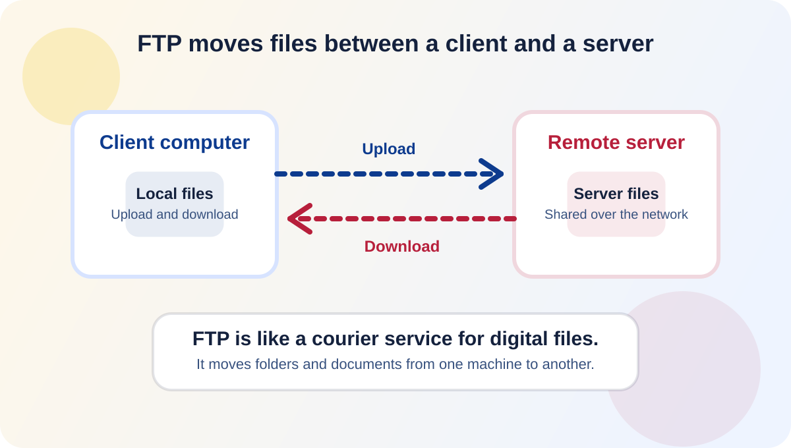

FTP (File Transfer Protocol) is used to transfer files between computers over a network.
FTP
This page explains FTP using its definition, role, and analogy.

It allows uploading and downloading files between clients and servers.
Like sending files using an online courier.